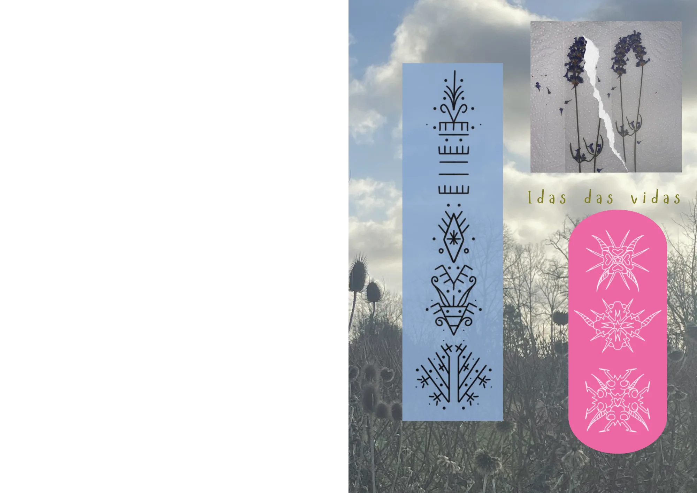

Fanzine
Idas das Vidas · 2025 · 12 pages, A5
Click a page or use the arrows to turn the pages.

Front cover
About it
Idas das Vidas started as a way to hold on to small moments. It brings together my own photographs and short poems across 12 pages, following the cycles of life: growth, loss, return and renewal.
The title plays with the comings and goings of a life: the places we leave, the people we lose, and the versions of ourselves we keep coming back to.
Where my illustrations imagine a hopeful future, the fanzine stays close to the present. It's quieter and more personal, but it asks the same question: how do we live alongside nature and time?
It's printed in A5, made to be held and paged through slowly. It premiered in 2025 at the Fanzine Festival in Palermo, Italy, where it was shown next to my illustrations.
For me, the fanzine is a reminder that not everything I make has to be a product or a solution. Some work is simply a space to slow down and notice. That same attention to small, human moments is something I carry into my design work, too.